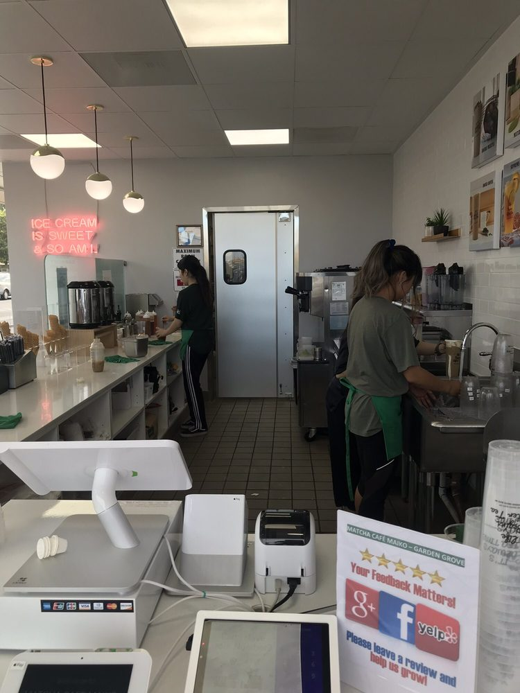
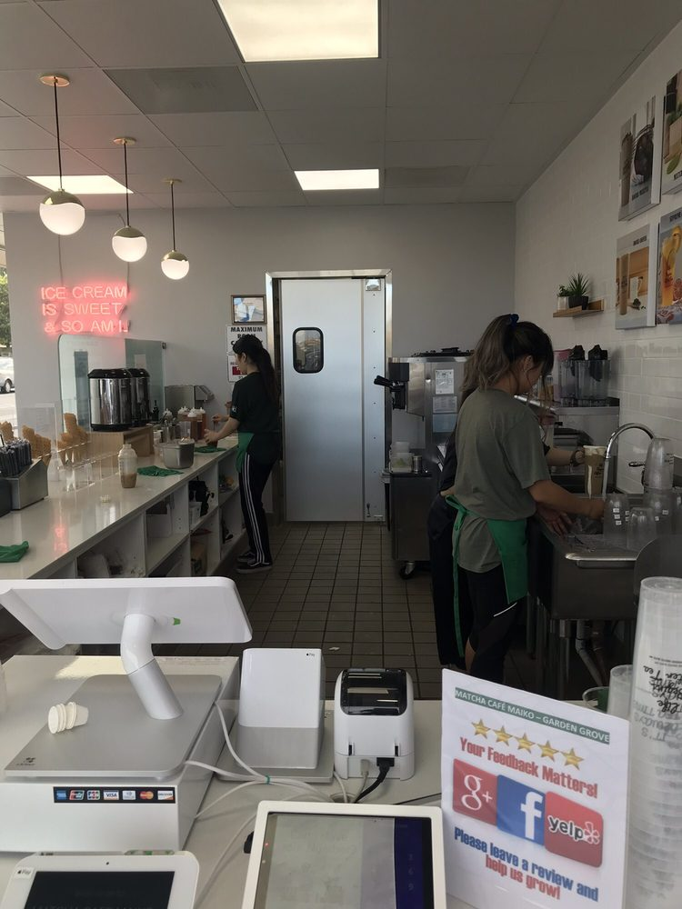
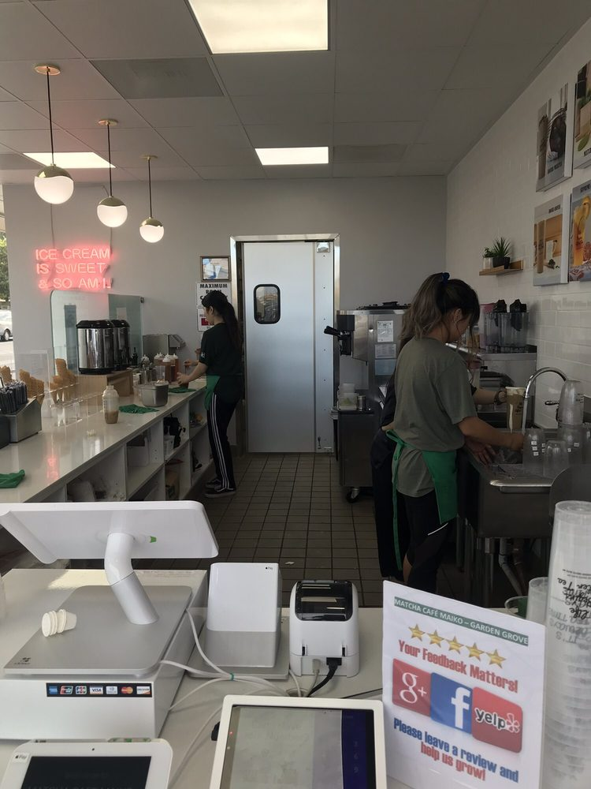

Tina Nguyen
My name is Tina Nguyen and I’m currently attending the University of California, Riverside. I am a freshman majoring in Pre-Business on track to entering the Business Administration Program with an Accounting concentration. I am also involved in the school’s Vietnamese Student Association (VSA) where I am an active member. During high school, I was in my school’s Associated Students Body (ASB) for 3 years where I was the student store manager and also treasurer. In these capacities, I was in charge of maintaining stock for the store, which includes ordering, keeping records of stock, and making a profit for the school. There is a tremendous importance in these positions because our ASB funded all of the school’s extracurricular events. Outside of school activities I have been a part of my local Girl Scout Troop for over a decade. In my troop I have been a team leader and also the Troop’s treasurer. This treasurer position gave me my first substantial experience with keeping meticulous financial records for an organization and maintaining a balance budget.
I also have an extensive amount of experience when it comes to working in an office environment. I have interned for a medical office in Fountain Valley, CA where my main duties were to take patients’ phone calls, schedule appointments, interact with patients in a professional manner when they arrive in person. Additionally, I also handled sensitive and confidential information related to a vast number of patients when I filed and organized all patient files. This internship experience gave me the confident in my ability to communicate with clients and handling sensitive information with the utmost professionalism.
In terms of employment, I have worked for a dessert shop called Matcha Café Maiko in Garden Grove, CA. During my short stint here before going off to college, I was given the responsibility of making drinks, handling payment, keeping the restaurant clean, and communicating with customers to make their experiences the best one possible. Here, I learned a lot about the intricacies of entrepreneurship. Since the franchisees were small business owners, I was able to witness how they were able to make their investment run efficiently. I also saw the amount of hard work that goes into maintaining profits for a small business.
As for my current place of employment, I am working for Raising Canes in Garden Grove, CA. The difference between Raising Canes and Matcha Café Maiko is that the former is a much bigger chain, has more name recognition, and therefore will operate differently from the latter. I hope to see more of what sets a business chain that spans across the country versus a more niche chain that caters mainly to customers from only one state. Knowing this difference will help me with my knowledge base since if I do want to start a business, I would love to have that business do well within the state and also grow exponentially so that the name is recognizable all around the country, and perhaps internationally as well.
Experience
Cashier
• Took customer's orders
• Handled customer's payment
• Responsible for putting together customer's orders
Cashier/Barista
• Made customer's drinks and desserts
• Handled payment transactions
• Kept work area and dining area clean
ASB Treasurer
• Made work schedules for student store
• Keep track of stock for the store
• Work with teachers, administrators, and wholesalers to restock store
• Make profits for the store and the school within the guidelines set by the district
Education
UC Riverside
Portfolio
.jpeg)
.JPG)
.JPG) 

